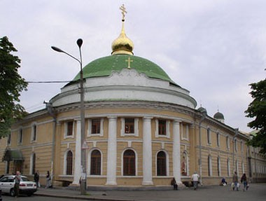

Пам'ятки України
Україна у складі Російської та Австрійської імперії
19 століттяВведенський монастир
Час заснування:
кінець XIX - початок XX століття
Архітектурний стиль:
Багато давніх монастирів притримуються одного архітектурного стилю, проте Введенський монастир не має єдиних рис.
Місце розташування:
Київ
Вірування:
православ'я

кінець XIX - початок XX століття
Архітектурний стиль:
Багато давніх монастирів притримуються одного архітектурного стилю, проте Введенський монастир не має єдиних рис.
Місце розташування:
Київ
Вірування:
православ'я

Цікаві факти:
Введенський монастир був заснований завдяки зусиллям Матрони Олександрівни Єгорової. Ця історична постать після загибелі свого чоловіка, починаючи з 1856 року проживала у Києві, і розпоряджалась чималими статками
За тривалий період часу вона здійснила декілька дій, котрі допомогли їй реалізувати власну мрію — створити жіночу громаду. Для цієї мети потрібна була велика територія
Матрона Єгорова почала скуповувати будинки у Печерському районі, на вулицях Рибальській та Московській. Незабаром у її власності опинилась уся нерухомість кварталу. У 1878 році відбулось відкриття жіночої громади, площа котрої склала приблизно 2390 квадратних сажнів